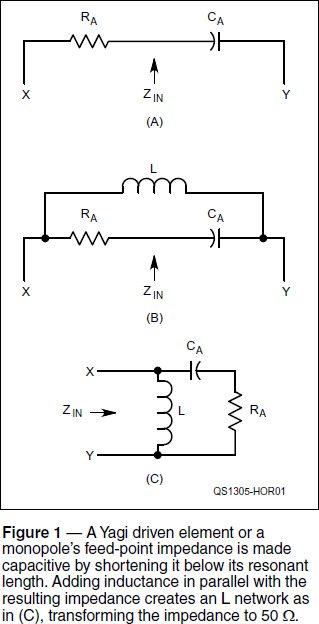
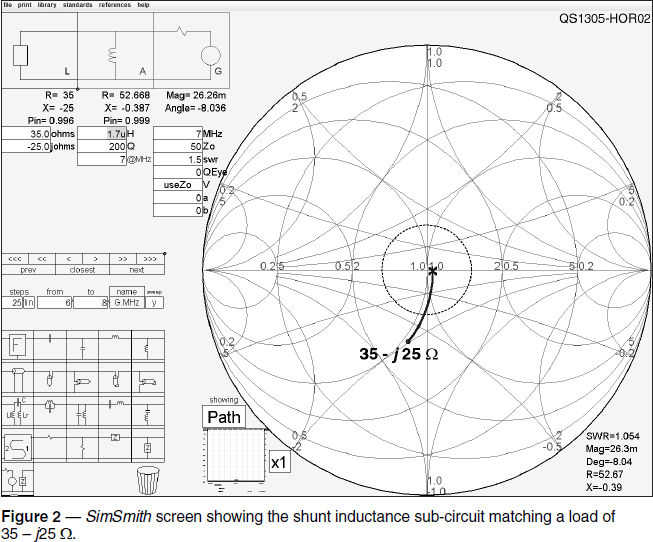
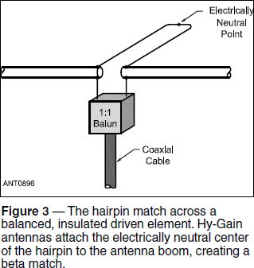

Antennas and Propagation
Experiment #124 — The Beta Match
This month’s column will show you four different types of antenna feed-point impedance matching that all work in the same way even though they look quite different. In addition, I’ll introduce a new friend for your computer toolbox — SimSmith by Ward Harrington, AE6TY.
The basic problem — impedance matching using inductance across an antenna’s feed-point — is the same, but the solution goes by several names. This makes it more difficult to understand because giving the same things a different name (or giving different things the same name) is confusing. Nevertheless, as you read the column, keep in mind that all of the techniques presented here accomplish the same task.
The Essential Problem and its Solution
While discussing impedance matching of antennas, it’s natural for most hams to imagine impedances greater than 50 Ω. The examples we use in learning about SWR primarily use higher impedance values for the calculation ZLOAD / Z0: 100 / 50 = 2:1, for example. In actuality, it’s common for ZLOAD to be less than 50 Ω. A Yagi’s driven element feed-point impedance is often in the range of 20 to 30 Ω and the natural impedance for a quarter-wave monopole (the common ground plane) is around 35 Ω.
Transforming this lower impedance to 50 Ω doesn’t lend itself well to the most common techniques. The impedance ratio of 1.4 - 2:1 doesn’t fall into the usual 1:2:4:9-type ratio of “easy” transformer impedance ratios, nor are there coaxial cables with a characteristic impedance of 35 to 40 Ω that would enable simple quarter-wave “Q sections” to do the job.1 [A pair of 75 Ω cables in parallel will get in range, though they are a bit clunky. — Ed.]
Nevertheless, the clever approach illustrated in Figure 1 gives the electrical schematic view of how this problem is solved. First, we have to give up the usual assumption that the feed-point impedance is resonant — that is, R + j0 Ω. It’s part of our “ham DNA” that makes us think antennas need to be resonant to work, but in this case resonance actually makes the problem harder.

By making the antenna a little shorter than its resonant length, the feed-point impedance becomes slightly capacitive (A). That capacitive reactance can then be used as part of an L network by adding an inductor across the feed point as shown in (B). Redrawing the circuit (C) results in the L network’s more familiar form. (See Experiment #21 for more about L networks.)
There is a bit of a trick involved. You can’t have just any amount of resistance and capacitive reactance. The combination has to be in the right range so that adding the inductance transforms the impedance to 50 + j0 Ω. How do you figure that out?
SimSmith
The standard way of visualizing transmission line and impedance matching mechanics is by using a Smith chart. (If you are unfamiliar with the Smith chart, read the introduction in Hands-On Radio experiments #59-61. Recent editions of the ARRL Antenna Book include a detailed tutorial on the Smith chart, either in print or on the CD-ROM.2) Yesterday’s compass and straightedge have been replaced by interactive computer software such as the easy-to-use SimSmith (www.ae6ty.com/Smith_Charts.html). Written in Java, AE6TY’s free tool is available for a wide variety of computers. Furthermore, he has created videos and guides to explain how to use the software and the Smith chart, so there is no reason not to have a copy and begin learning the power of “seeing inside” transmission lines and matching networks. Before taking a look at our current problem using SimSmith, allow me to point out a few of its features that I will use here.
First, as you can see in Figure 2, the program shows the usual constant-resistance circles and constant-reactance arcs in light red. Less usual are the constant-conductance circles and constant-susceptance arcs shown in light blue. (Susceptance, B, is the reciprocal of reactance, X.) The normalized 1.0 + j0 point is at the center. (In our 50 Ω world, that represents an impedance of 50 + j0 Ω or an admittance of 0.02 + j0 S, where S is the symbol for siemens, the unit of conductance.) From any impedance or admittance point on the chart, adding resistance or reactance in series “moves” along the red circles and arcs. Adding resistance or reactance in parallel or shunt “moves” along the blue circles and arcs. (Instead of move, I’ll use the correct term transform from here on.)

At the upper left, SimSmith shows the transmission line circuit you’ve constructed, including a load at the left and the source (generator in Smith chart speak) at the right. A collection of subcircuits is available at the lower left — there is everything from series and shunt components, to stubs, to tuned circuits, to general-purpose blocks that perform specific math functions. Add a subcircuit by drag-and-dropping it onto the transmission line circuit at the desired point. Then fill in the values (too small to reproduce in the figure) underneath the subcircuit. SimSmith does the rest. Let’s try it.
Using a Coil
Figure 2 is a screen shot from SimSmith showing the equivalent of Figure 1C. An easier to read version is on the Hands-On Radio web page. By entering 1.5 in the generator’s SWR value window, SimSmith drew a constant-SWR circle around the center — all points within this circle represent SWR values of 1.5:1 or less — for reference. I selected a frequency of 7 MHz because I use a quarter-wave vertical on 40 meters at my station. Game on!
While designing an antenna, achieving the goal of being able to use a single shunt inductor as your matching network requires the right feed-point impedance, shown as the load on SimSmith. Adding the shunt inductor will transform the impedance counter-clockwise parallel to one of the light blue constant-conductance circles as shown by a heavy blue line. (The inductor adds susceptance but does not affect the conductance. Parallel capacitance transforms clockwise.) The feed-point impedance should be designed such that adding inductive susceptance can transform the impedance to within the desired constant-SWR circle.
Starting with the antenna’s feed-point impedance at the left, I’ve entered a value of 35 – j25 Ω. This is a reasonable value for an aluminum tubing vertical over a good ground system, adjusted to a bit less than its natural resonant length. By “fiddling with” (technical term) the value of inductance, I found that a value of 1.7 µH presented a resulting impedance of 52.3 – j 0.4 Ω to the feed line for an SWR value of 1.05:1. I’d say that works. In fact, this is quite close to the size of inductor I use to match my vertical antenna on 40 meters.
Try a Shorted Stub
Assuming you’ve downloaded SimSmith and are running it, enter the same values for load impedance but replace the parallel inductor with a shorted stub — the sub-circuit directly below the parallel inductor. Drag-and-drop the parallel inductor sub-circuit into the trash can symbol. Then drag the shorted-stub subcircuit to the transmission line circuit.
From the values SimSmith assumes about the stub (such as it being made of 50 Ω coax), adjust the length until you get about the same match as with the inductor (≈55°). For fun, increase stub length to 90° — the stub now presents an open circuit so that it does nothing. (See Experiment #22 for more about stubs.)
Can you use a longer length to create an inductive feed-point impedance and match it with a parallel capacitance? Change the feed-point impedance to 35 + j25 Ω and find out. (300 pF should get you close.)
Using a Hairpin
Along with shunt inductance and shorted stubs, the third name and fourth idea covered here is the hairpin or beta match shown in Figure 3. You should recognize the matching device as a shorted stub of open-wire transmission line. Typical hairpins are made of heavy wire with wide spacing that results in a high characteristic impedance. What length of hairpin is required to match our original load if its characteristic impedance is 300 Ω? (Roughly15° or 2.8 feet at 7 MHz for a 95% velocity factor.)

If the driven element is insulated and electrically balanced, the very center of the feed-point and the matching hairpin are electrically neutral. Hy-Gain antennas add mechanical stability to the design by attaching that point of the hairpin to the antenna boom — also electrically neutral with respect to the feed line — creating the beta match.
A Common Theme
You should now see the common theme of all four matching designs. By creating capacitive reactance in the feed-point impedance and applying a shunt inductance across the feed point, the ratio and phase of voltage and current can be altered to create a purely resistive impedance of the desired value.
1See Hands-On Radio experiment #81, “Synchronous Transformers.” All previous Hands-On Radio experiments are available to ARRL members at www.arrl.org/hands-on-radio.
2The ARRL Antenna Book, 22nd Edition. Available from your ARRL dealer or the ARRL Bookstore, ARRL order no. 6948. Telephone 860-594-0355, or toll-free in the US 888-277-5289; www.arrl.org/shop; pubsales@arrl.org.